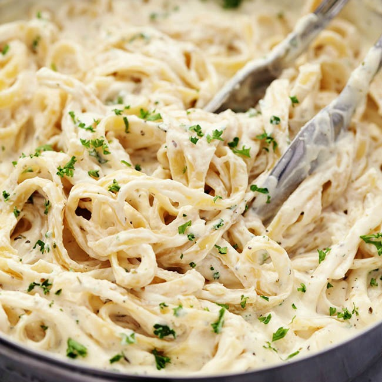
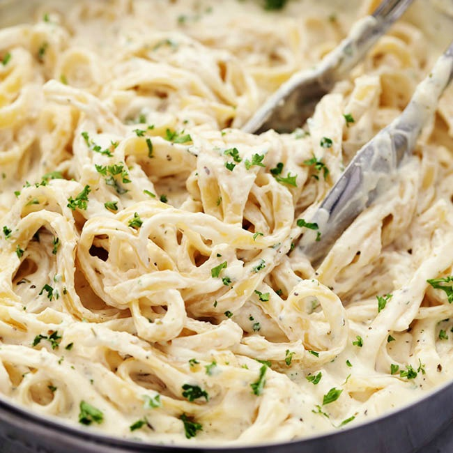

Fettuccine Alfredo or fettuccine al burro is a pasta dish made from fettuccine tossed with parmesan cheese and butter. As the cheese melts, it emulsifies the liquids to form a smooth and rich sauce coating the pasta. In other words, it is a version of pasta with butter and parmesan cheese (Italian: pasta al burro e parmigiano). Alfredo di Lelio gave it this name at his restaurants in Rome, in the early to mid 20th century, where the "ceremony" of preparing it tableside was an integral part of the dish
Step 1: Bring a large pot of lightly salted water to a boil. Add fettuccini and cook for 8 to 10 minutes or until al dente; drain.
Step 2: In a large saucepan, melt butter into cream over low heat. Add salt, pepper and garlic salt. Stir in cheese over medium heat until melted; this will thicken the sauce.
Step 3: Add pasta to sauce. Use enough of the pasta so that all of the sauce is used and the pasta is thoroughly coated. Serve immediately.
 


Recipes attributed to Alfredo only include three ingredients: fettuccine, young parmesan cheese and butter. Yet there are various legends about the "secret" of the original Alfredo recipe: some say oil is added to the pasta dough, others that the noodles are cooked in milk. The secret may in fact be simply that the noodles, cheese and butter are tossed constantly with some pasta water in a well-warmed platter to ensure that they melt together thoroughly.